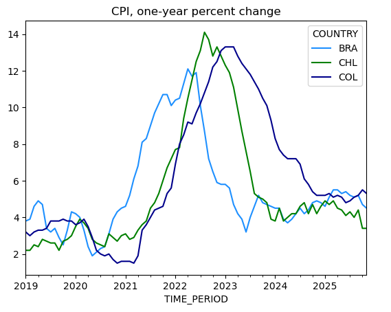

The IMF's data portal provides access to macroeconomic data covering more than 180 countries. Using Python's sdmx1 library, it is straightforward to retrieve data through the IMF's SDMX API.
The example below retrieves monthly Consumer Price Index (CPI) data for Brazil, Chile, and Colombia, calculates year-over-year inflation rates, and plots the results. This demonstrates the core workflow: connecting to the API, building a request key, fetching data, and converting it to a pandas DataFrame for analysis.
First, install the sdmx1 library if you haven't already:
pip install sdmx1We need pandas for data manipulation and sdmx for accessing the IMF API:
In[1]:
import pandas as pd
import sdmxDefine the countries, dataset, and series codes. The key string combines these parameters using dots as separators, with multiple countries joined by + signs:
In[2]:
# parameters
countries = ['BRA', 'CHL', 'COL']
classification = 'CPI'
series = '_T.IX.M'
key = f"{'+'.join(countries)}.{classification}.{series}"The key BRA+CHL+COL.CPI._T.IX.M requests all-items (_T) price index (IX) data at monthly (M) frequency for the three countries.
Create an SDMX client for the IMF and fetch the data. The sdmx.Client connects to the IMF's data endpoint, and the .data() method retrieves observations for the specified dataset and key:
In[3]:
# retrieve data
IMF_DATA = sdmx.Client('IMF_DATA')
data_msg = IMF_DATA.data('CPI', key=key,
params={'startPeriod': '2018'})
# convert to pandas
df = sdmx.to_pandas(data_msg).reset_index()
df = df.set_index(['TIME_PERIOD', 'COUNTRY'])['value'].unstack()The sdmx.to_pandas() function converts the SDMX message into a pandas structure. After reshaping, we have a DataFrame with dates as rows and countries as columns.
Convert the index to datetime, calculate year-over-year percent changes, and create a line plot:
In[4]:
# Convert index to datetime and sort
df.index = pd.to_datetime(df.index, format='%Y-M%m')
df = df.sort_index()
# Calculate inflation rate and drop empty rows
res = (df.pct_change(12) * 100).round(1).dropna()
# Plot results
res.plot(title='CPI, one-year percent change',
color=['dodgerblue', 'green', 'darkblue'])Out[4]:

This example demonstrates the core workflow for accessing IMF data with sdmx1:
sdmx.Client('IMF_DATA') creates a connection to the IMF's SDMX endpoint;.data() method retrieves data for a specific dataflow using a key string;sdmx.to_pandas() converts the SDMX message to a pandas DataFrame;+ as a separator.Part 2 covers how to discover available datasets and find the correct parameter codes for your data of interest.